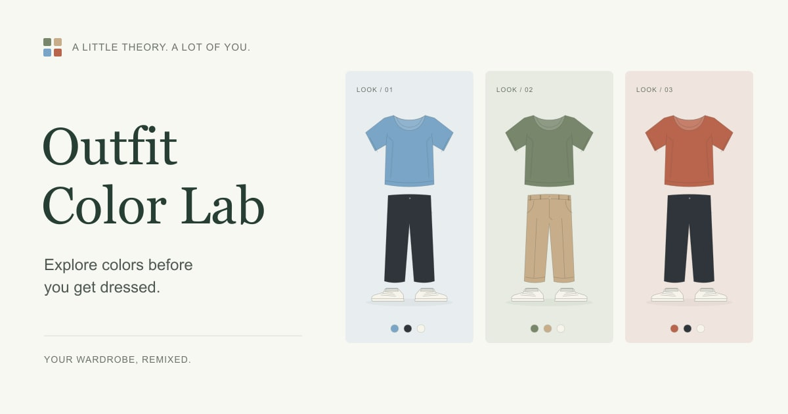

Five ideas / 五个想法
| Idea | For whom? | Main interaction |
|---|---|---|
| Outfit Color Lab | Students exploring everyday outfit colors | Recolor three garment illustrations |
| Study Break Studio | Students who need a short screen break | Choose a break length and start a timer |
| Campus Plant Guide | Students caring for a first indoor plant | Filter plants by room conditions |
| Pantry Lunch Ideas | Students cooking with a small pantry | Filter lunch ideas by ingredients |
| Weekend Photo Walks | Beginner photographers with limited time | Filter sample routes by duration |
The three strongest directions
| Idea | Four pages | Most important page | Smallest complete version |
|---|---|---|---|
| Outfit Color Lab | Home, Guide, Lab, Gallery | Color Lab | Three editable parts, six colors, six presets |
| Campus Plant Guide | Home, Plants, Care, Light Finder | Light Finder | Filter a small sourced plant selection by light |
| Study Break Studio | Home, Why Breaks, Timer, Activities | Timer | Start/reset a browser timer and choose an activity |
Preferred project: Outfit Color Lab
One sentence: A simple color tool that helps students plan outfits using clothes they already own.
Outfit Color Lab is an interactive website for exploring how clothing colors work together. Its main task is to preview a top, trousers and shoes, then change their colors independently. It aims to make a small everyday decision easier to explore.
The intended audience is university students who have useful clothes but feel unsure about combining their colors. A typical visitor already has blue jeans and wants to compare a light, dark or warmer top before getting dressed.
The four main pages have separate roles. Home introduces the idea; Color Guide offers three starting points; Color Lab is the working tool; Outfit Gallery supplies six combinations that can be loaded into the lab.
The implementation uses semantic HTML, responsive CSS and browser JavaScript. A JavaScript object stores the current colors, and CSS variables update original SVG garments. Preset IDs travel between pages in the URL. The site needs no account, server or database.
The smallest version worth showing
- Four connected pages, working on desktop and phone.
- Independent selection and recoloring for three garments.
- Named swatches, randomize, reset and six URL-based presets.
- Original vector illustrations and credited external photography.
- Course-size share cover, favicon, app icon, screenshots, source history and a live HTTPS site.
Poster sketch
The cover uses a warm paper background, the project title and three original outfits. Small colored squares echo the website mark. The exported JPEG is 1200 × 630 pixels and below 100 KB.

Development process
Development began on 15 October 2026, Asia/Shanghai. Git commits record real stages from this session: planning and shared navigation, original garment artwork and layout, interactive controls, researched content and assets, then testing and deployment. Same-day commits do not represent earlier weeks of development.
Why these decisions?
- Simple SVG: lets a user focus on color and makes the recoloring logic visible during the defence.
- Named swatches: prevent the controls from depending on color alone.
- Separate HTML pages: make navigation and each page's purpose explicit.
- Local image files: support a reliable local backup demonstration.
- No database: the core task only needs temporary state in the browser.
AI assistance and material sources
AI assisted with implementation, draft copy, vector artwork and testing. The student needs to review and understand the work before presenting it. Photographs are by Sarah Dorweiler and Daryl Han on Unsplash. Color references are linked on the Color Guide and in every page's footer. Detailed source notes and test evidence are included in the repository.